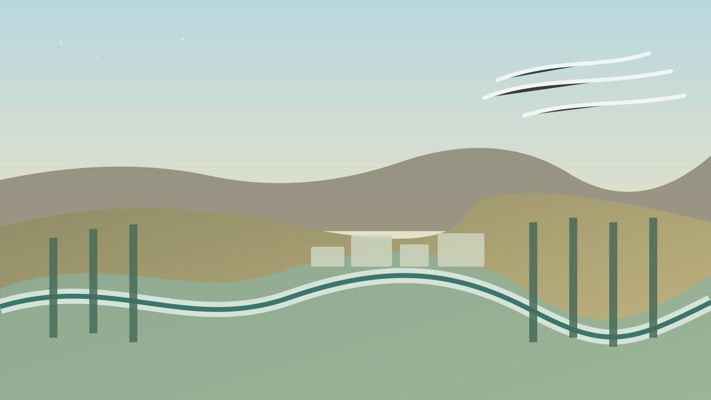

Lectura de lluvia
Fuente y estado: la serie meteorológica local solo se publica cuando estación, identidad y cobertura pueden verificarse.

Una entrada simple para mirar Chañar. Cuatro puertas para entrar en profundidad: lluvia, viento, temperatura y agua + tierra.
No vamos a mostrar un número suelto. La lectura profunda relaciona acumulados, días, períodos secos, eventos y procedencia.
La profundidad separa velocidad, dirección, ráfagas y pronóstico. Después los vuelve a conectar con el paisaje.
Máxima, mínima, amplitud, heladas y extremos forman una historia cuando se observan en conjunto.
El clima deja de ser una pantalla y entra en el territorio: río, riego, chacras, paisaje, producción y vida cotidiana.
La página empieza mirando el territorio y termina entendiendo por qué ese territorio importa. Cada puerta profundiza una parte del mismo sistema.